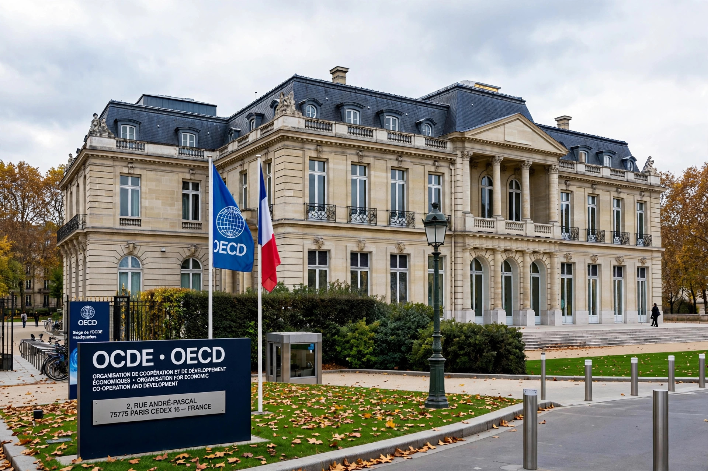

OECD Anti-Bribery Convention
From Wikipedia, the free encyclopedia
| OECD Anti-Bribery Convention | |
|---|---|
 | |
| Signed | 17 December 1997 |
| Location | Paris, France |
| Effective | 15 February 1999 |
| Parties | 46 (all OECD members plus non-member adherents) |
| Full name | Convention on Combating Bribery of Foreign Public Officials in International Business Transactions |
The OECD Anti-Bribery Convention (formally the Convention on Combating Bribery of Foreign Public Officials in International Business Transactions) is an anti-corruption convention adopted by the Organisation for Economic Co-operation and Development. Signed on 17 December 1997 and in force from 15 February 1999, it requires parties to criminalize the bribery of foreign public officials in international business transactions.
Background
For two decades the United States' Foreign Corrupt Practices Act stood largely alone: in many exporting countries, foreign bribes were legal and even tax-deductible. Following sustained U.S. pressure and OECD recommendations in 1994 and 1997, member states negotiated the Convention to level the competitive playing field and combat the supply side of international corruption.
Provisions
Parties must establish as a criminal offence the intentional offering, promising or giving of any undue advantage to a foreign public official, directly or through intermediaries, in order to obtain or retain business or other improper advantage in international business. The Convention also requires liability of legal persons (corporations), effective and dissuasive sanctions including monetary penalties and confiscation, jurisdiction over offences committed in a party's territory and by its nationals, prohibitions on off-the-books accounts, and mutual legal assistance; bribery of a foreign public official is deemed an extraditable offence and a predicate offence for money laundering.
Monitoring
The OECD Working Group on Bribery conducts rigorous peer-review monitoring in phases, evaluating first the adequacy of implementing legislation, then its application, and subsequently enforcement in practice, with published country reports and follow-up. A 2021 OECD Recommendation further strengthened standards on matters such as non-trial resolutions, whistleblower protection and demand-side bribery.
Enforcement record
Enforcement has historically been concentrated in a few countries — notably the United States, Germany, the United Kingdom (after the Bribery Act 2010), Switzerland and France — and NGOs such as Transparency International have periodically graded many parties as showing little or no active enforcement.
See also
- Foreign Corrupt Practices Act
- UK Bribery Act 2010
- United Nations Convention against Corruption
This article is a recreation from memory in the style of Wikipedia.